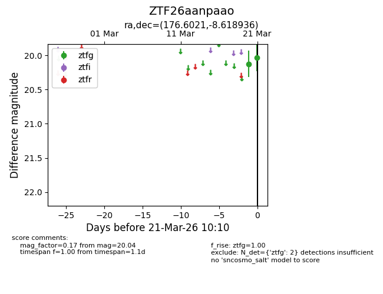
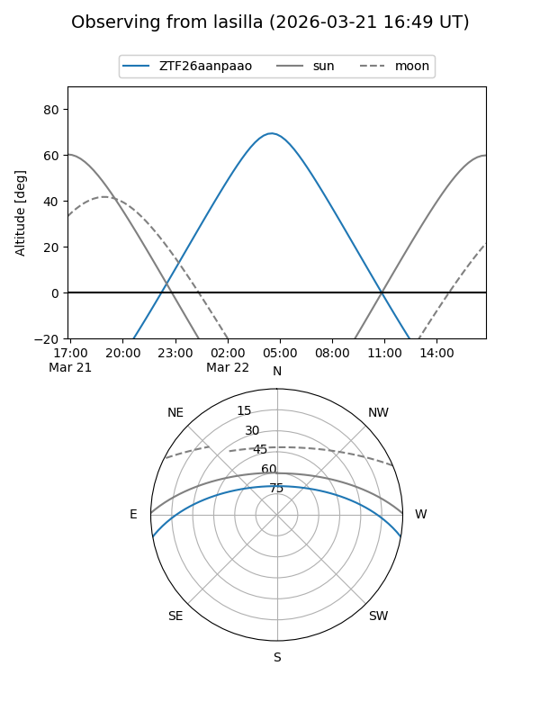
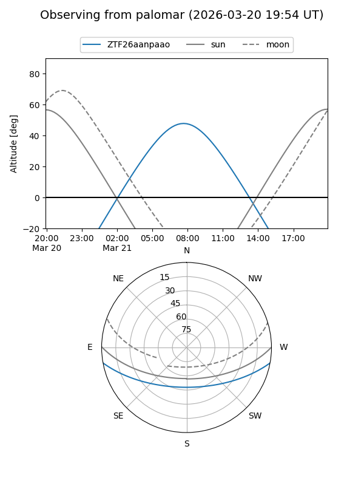
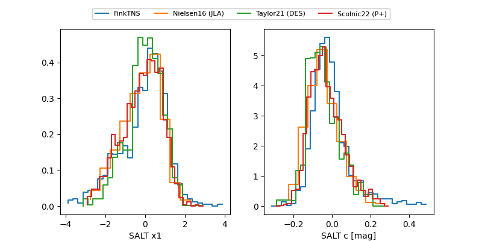

ZTF26aanpaao
Target ZTF26aanpaao at 2026-03-21 10:13
Aliases and brokers:
FINK: link
Lasair: link
ALeRCE: link
alt names
ZTF26aanpaao (ztf,fink_ztf)
Coordinates:
equatorial (ra, dec) = 176.6021,-8.61894
equatorial (HMS+DMS) = 11:46:24.50,-08:37:08.17
galactic (l, b) = (276.8792,+50.93370)
Flags:
Photometry:
last ztfg=20.04
2 ztfg detections
Lightcurve

Visibility


Additional plots
